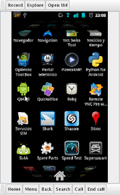
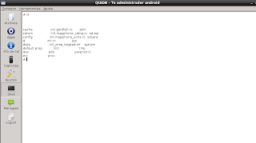
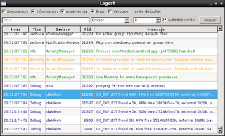

Qtadb programa para controlar un celular Android desde el PC
Posted on dom 19 junio 2011 in Aplicación Android • 2 min read
En la página de elandroidlibre.com publicaron un artículo donde hablan del programa QtADB el cual permite manejar el sistema de archivos del celular, ver la lista de paquetes instalado, realizar capturas de pantalla, ejecutar la consola del celular, recovery y otras opciones. El enlace de el androidelibre.com lo tienen acá.
Es necesario tener instalado el SDK de Android, este se puede bajar en este enlace.
Es necesario instalar el paquete apk (qtadb.apk) en el celular y bajar el paquete QtADB para Linux en este caso para 32 bits lo pueden bajar en este enlace.
La página de qtadb se encuentra en el siguiente enlace.
El procedimiento para instalar el SDK de Android en Linux lo pueden seguir acá.
Al tener instalado el SDK de Android en Linux se conecta el celular y se inicia el servicio de adb:
ernesto@jewel:~/bin$ adb devices
* daemon not running. starting it now on port 5037 *
* daemon started successfully *
List of devices attached
0403725B09015010 device
Pero para lograr esto es necesario habilitar el celular con conexión USB como Portal y Herramientas, la siguiente figura muestra la opción:

Para instalar el paquete apk en el celular se ejecuta el comando adb para la instalación de paquetes como se muestra:
ernesto@jewel:~/bin$adb install qtadb.apk
44 KB/s (24316 bytes in 0.531s)
pkg: /data/local/tmp/qtadb.apk
Success
En la siguiente figura se muestra el programa instalado en el celular:

Al darle clip a QtADB se mostrará 2 botones uno para iniciar el servicio y otro para detenerlo como lo muestra la siguiente figura:

Se inicia el servicio y lo que queda es iniciar el QtADB para Linux.
Al iniciar la aplicación lo primero que se muestra es el administrador de archivos como lo muestra la siguiente figura:

Se puede listar las aplicaciones instaladas en el celular, actualizar aplicaciones, desintalarlas y realizar respaldos de las mismas.

Se puede ver información del celular como el operador de telefonía celular, modelo, número de serie, ROM y el espacio de las particiones.

Se pueden realizar capturas de pantalla en el celular.

Se puede ejecutar un shell del celular:

Se puede visualizar los logs del celular:

Por último también se puede visualizar los mensajes de texto: Para que funcione revisar los mensajes es necesario activar y conectar el celular a la red wifi y en la aplicación activar wifi también.
En la siguiente figura se muestra los mensajes de texto almacenados en el celular:

===
¡Haz tu donativo! Si te gustó el artículo puedes realizar un donativo con Bitcoin (BTC) usando la billetera digital de tu preferencia a la siguiente dirección: 17MtNybhdkA9GV3UNS6BTwPcuhjXoPrSzV
O Escaneando el código QR desde billetera: